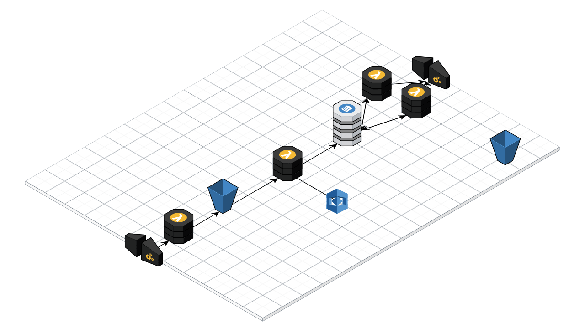

<div class="container">
    <div class="row">
        <div class="col-md-4">
            <h3>Final Project CIDAEN</h3>
            <p> This project has been developed by Alberto Crespo and Ángel Luis Sánchez during the <a href="http://www.cidaen.es/" target="_blank">CIDAEN course</a>.</p>
            <p>It has been deployed over AWS using the <a href="https://serverless.com/" target="_blank">Serverless framework</a> and the resources it provides have been used, including the Recoknition API, DynamoDB, Lambda, etc.</p>
            <p>In the image on the right you can see the architecture used in AWS. For the web part of the application, Angular 6, Bootstrap4 and Chart.js have been used for the graphics.</p>
        </div>
        <div class="col-md-8">
            
        </div>
    </div>
</div>